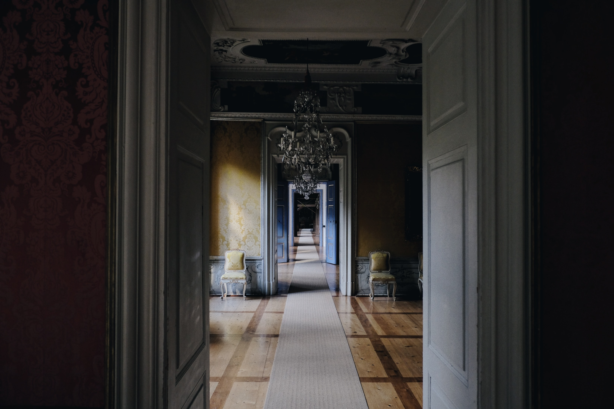

You proceed through the door and find yourself in a long dimly lit hallway with a beautiful aesthetic.

You admire the Wizard's taste in decor. As you ponder asking him where he gets his chairs, you begin to hear odd stirrings coming from the room at the end of the hallway. Suddenly you remember why you're here.
Could that be the Wizard? Does he know you're here? Is this a trap?
You can either proceed with caution, readying your most powerful defense spell to prepare for the worst, or charge in readying your most powerful attack spell to catch them off gaurd
Choose quickly before you notice the beautiful curtains and get distracted again.
Ready Your Defense Ready Your Attack